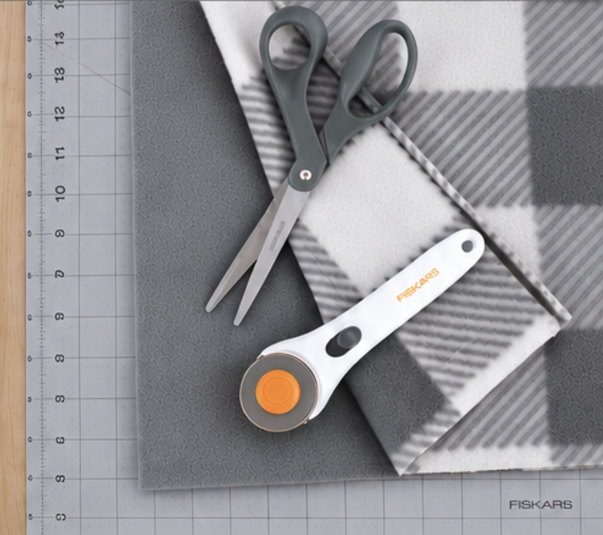
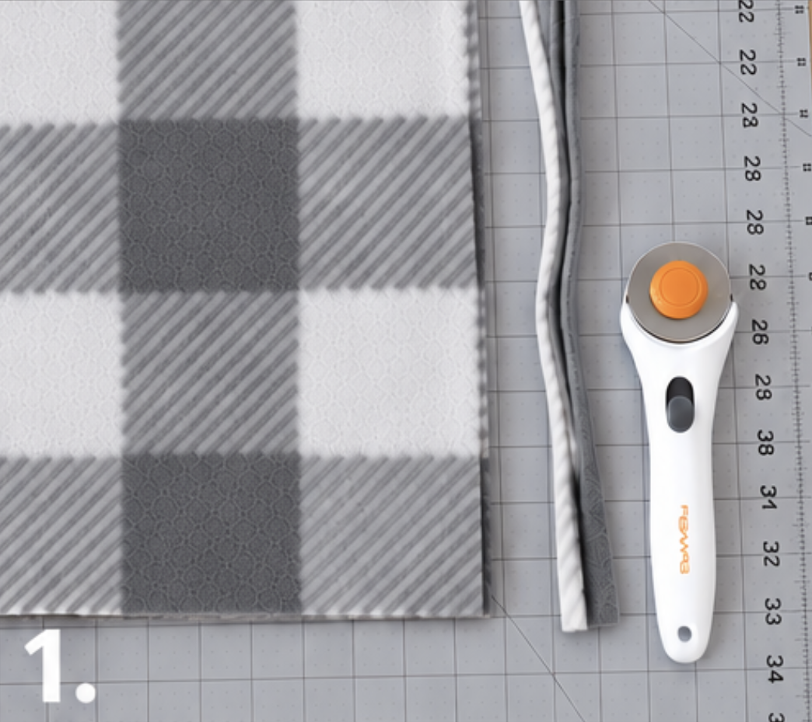
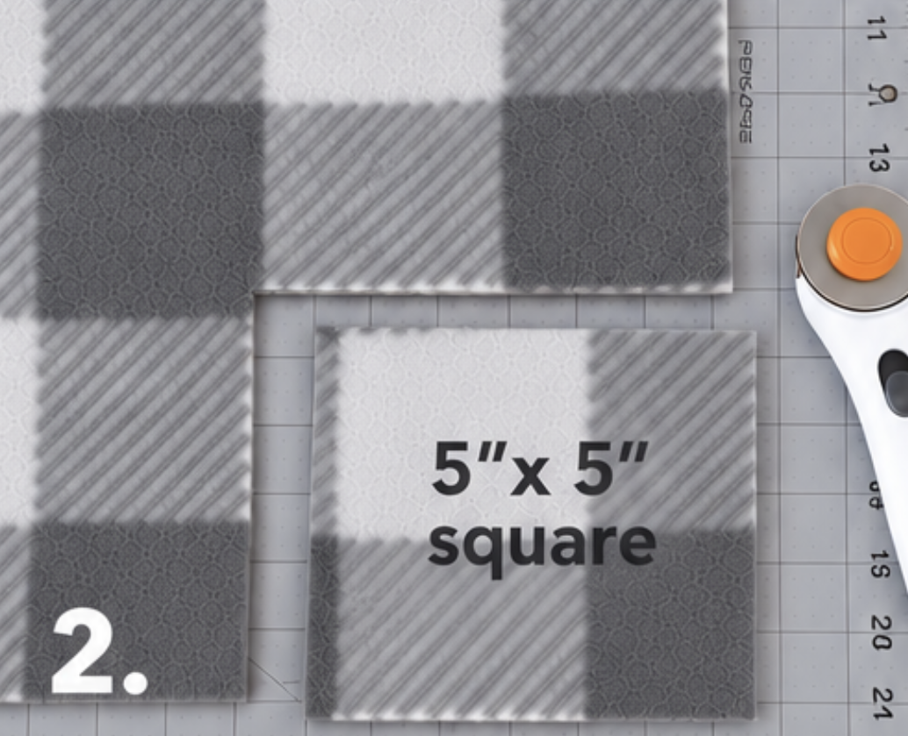
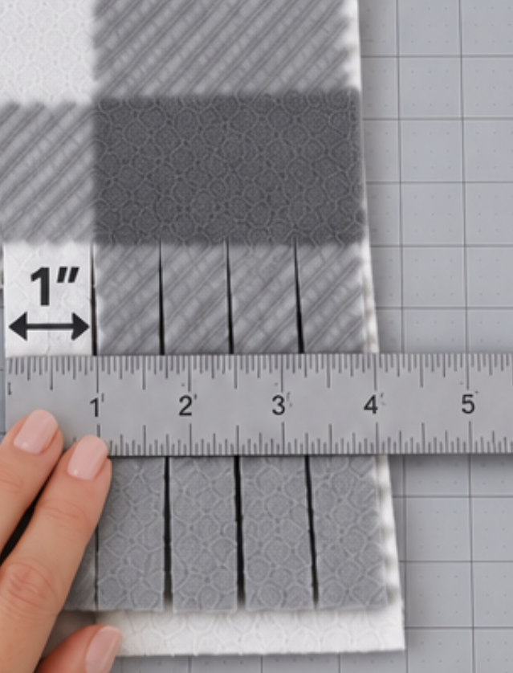
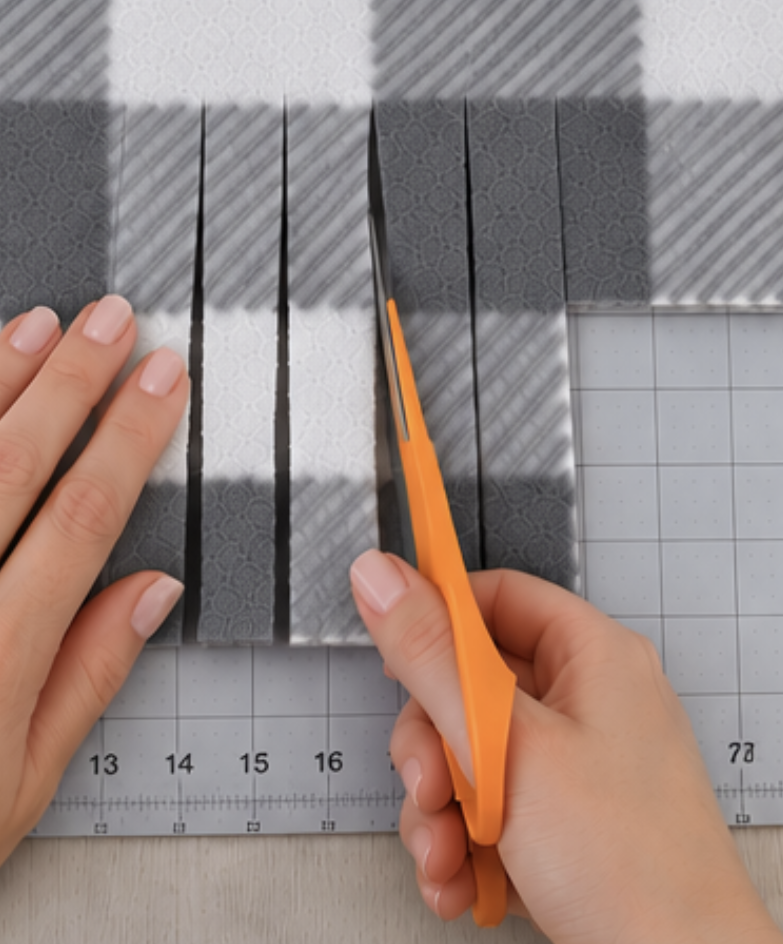
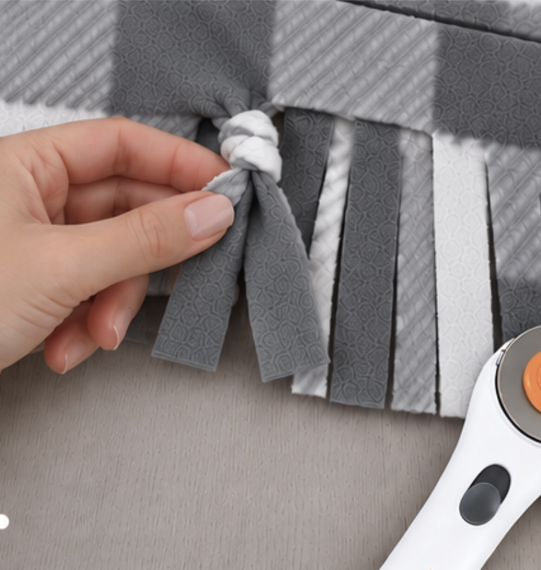

HOW TO MAKE A BLANKET...
-
Stack both layers of fleece on top of one another

-
remove any factory edges from the fleece

-
Cut a 4”x4” square from each corner

-
Cut 1” strips around the entire perimeter of the fleece


-
Tie the strips from the opposite layers together

-
Voila!